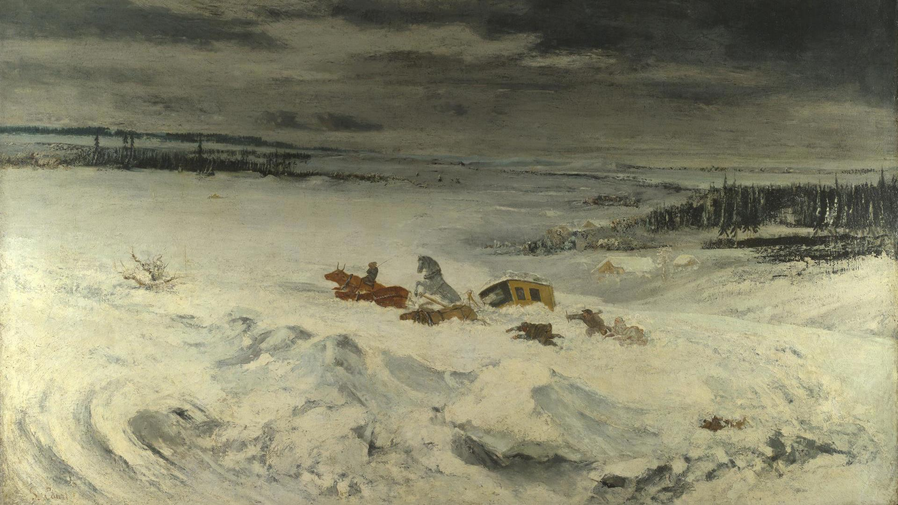

I keep a list of books I have read. I chose to include only fiction; if a nonfiction book appears here, there is some special reason for it. I'm always happy to chat about any of these titles, share recommendations, or find something to read together.
2025
- William Faulkner: The Sound and the Fury 01/25
- Virginia Woolf: Mrs Dalloway 03/25
- Shakespeare: King John 04/25
- Shakespeare: Edward III 04/25
- 白先勇《孽子》05/25
- 张爱玲《半生缘》06/25
- 托尔斯泰《复活》（石枕川译）07/25 (Leo Tolstoy: Resurrection)
- Fyodor Dostoevsky (tr. Robert A. Maguire): Demons 08/25
- 村上春树《世界尽头与冷酷仙境》（林少华译）09/25 (Haruki Murakami: Hard-Boiled Wonderland and the End of the World)
- 川端康成《雪国》、《伊豆的舞女》、《舞姬》、《山音》（陈德文译）10/25 (Yasunari Kawabata: Snow Country; The Dancing Girl of Izu; Maihime; The Sound of the Mountain)
- 川端康成《掌小说集》（高慧勤、徐建雄译）11/25 (Yasunari Kawabata: Palm-of-the-Hand Stories)
2026
- George Eliot: Daniel Deronda 02/26
- E. M. Forster: Maurice 03/26
- D. H. Lawrence: The Plumed Serpent 04/26
- Stefan Zweig: Brief einer Unbekannten 05/26
- Theodor Storm: Immensee 05/26
- Tezer Özlü (tr. Maureen Freely): Cold Nights of Childhood; Journey to the Edge of Life 05/26
- 韩少功《日夜书》06/26
- Bernhard Schlink: Der Vorleser 06/26